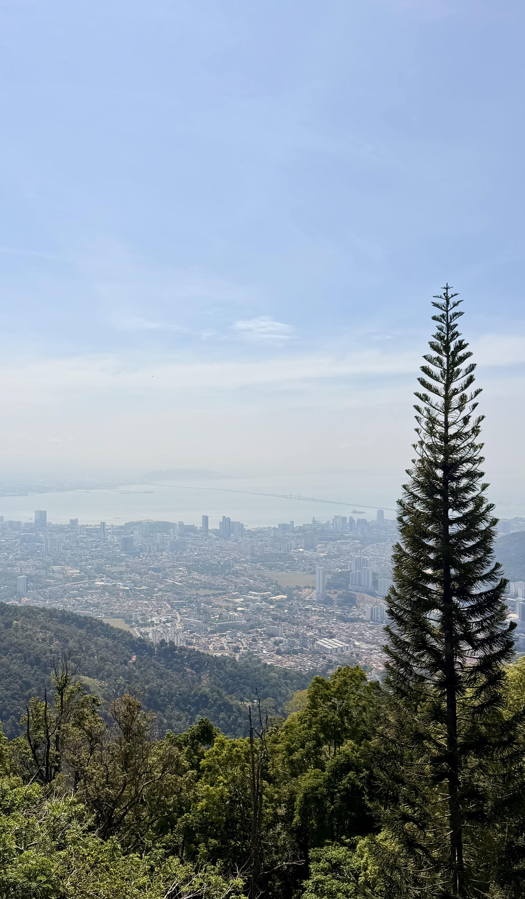

The Experience
Walk, eat, discover
Penang is a place that rewards you for slowing down.
We loved simply walking around, discovering the streets
of George Town and seeing what was around the next corner.
The architecture, small shops, old buildings and everyday
life give the city a character that is difficult to capture
unless you explore it on foot.
And then there is the food.
Eating became a big part of the experience for us, with
some genuinely memorable meals along the way. Two of the
places we'd particularly recommend are Community Table and
Peninsula House.
Penang felt like the sort of place where you don't need
a packed itinerary. Just put on your shoes, head outside
and start walking.
